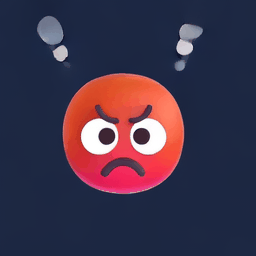
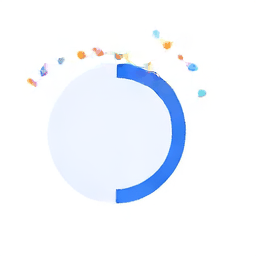
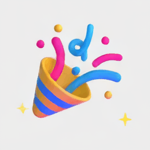
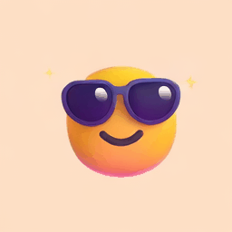
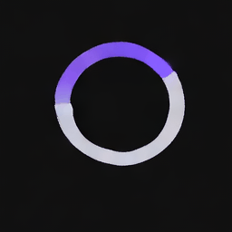
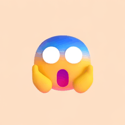

Bhaav (भाव) means feeling; the E is for expressions. A 212M-parameter text-to-video model, trained from scratch for about $12, that turns a short prompt into an animated sticker.
Seed 0, 50 steps, the first sample for each prompt. Not cherry-picked.






Only the middle part is trained. The two ends are borrowed and frozen.
Flan-T5-Base turns the words into 35 vectors of 768 numbers.
A diffusion transformer (16 blocks, 211.92M parameters) starts from pure noise and removes it in 50 small steps, steered by the prompt. It works on a compressed clip of 61K numbers instead of 3.3M pixels.
The Wan2.2 video VAE expands the result into 17 frames of 256 × 256.
256 test prompts with combinations seen in training, and 256 with combinations never seen together. A checker reads subject, motion, effect, background and colour from every generated sticker.
| Model | Error · seen | Error · unseen |
|---|---|---|
| r1 · natural data mix | 2.0% | 5.3% |
| r2 · effects balanced per subject (released) | 2.0% | 3.3% |
One training seed per model; the unseen gap is not statistically significant (p = 0.23). The main remaining mistake: adding the effect a subject usually has, such as tears of joy on a laughing face, when none was asked for.
No setup: open the Colab notebook,
click Runtime → Run all, and open the gradio.live link it prints. You get the full demo,
with a prompt builder, on Google's free GPU.
What it knows:
git clone https://github.com/Mohit-5899/bhaav-e
cd bhaav-e/space
pip install torch diffusers transformers \
sentencepiece gradio
python app.py # opens the demo locally